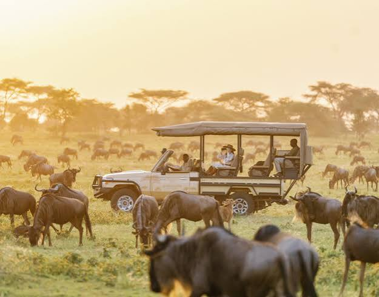
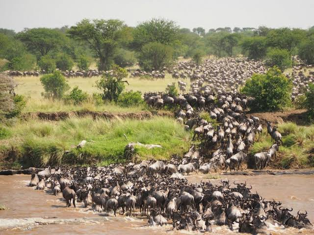
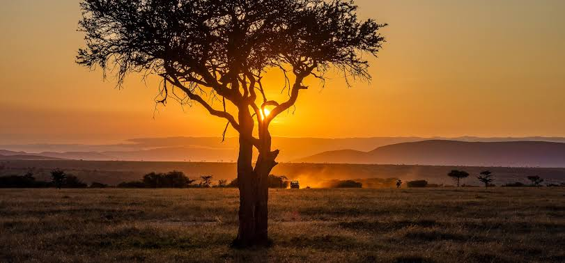
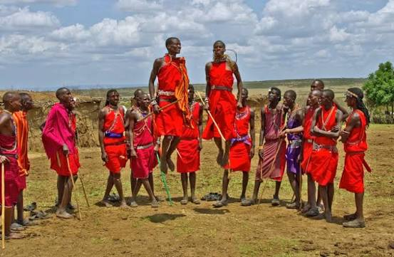
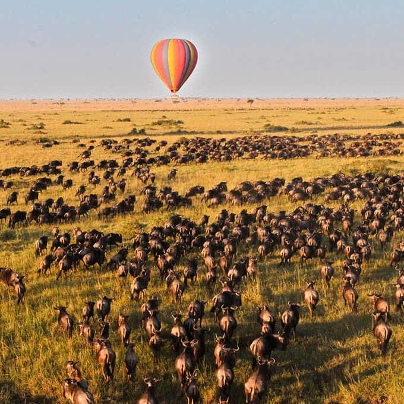
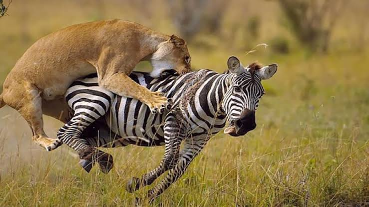

Experience the Wild Heart of Kenya
Discover the breathtaking Maasai Mara, one of Kenya's most iconic
safari destinations.
Explore vast savannahs, encounter incredible
wildlife and experience unforgettable moments surrounded by the
beauty of the African wilderness.
Travel-style : Wildlife & Adventure
Recommended duration : 3-4 days
Game Drive
Experience Kenya's wildlife up close
Explore the Maasai Mara's vast grasslands on a guided game drive and look out for lions, elephants, giraffes, zebras, cheetahs and other incredible wildlife.
Estimated price: From KES 5,000 per personGreat Migration Experience
Witness one of nature's greatest spectacles.
Experience the dramatic movement of thousands of wildebeest and zebras across the Mara ecosystem during the Great Migration season. Estimated price: From KES 8,000 per person
Maasai Mara Sunrise Safari
Start your morning in the wild.
Watch the African sunrise illuminate the savannah while searching for wildlife becoming active in the early morning.
Estimated price: From KES 6,000 per personMaasai Cultural Experience
Connect with the local Maasai community.
Learn about Maasai traditions, culture, crafts, music and everyday life through a guided cultural experience.
Estimated price: From KES 2,500 per personHot Air Balloon Safari
See the Maasai Mara from above.
Rise above the savannah at sunrise and enjoy breathtaking aerial views of the landscape and wildlife below. Estimated price: From KES 25,000 per person
Wildlife Photography
Capture unforgettable moments.
Spend time exploring the Mara with opportunities to photograph Kenya's wildlife, landscapes and spectacular sunsets. Estimated price: From KES 3,000 per person
TRIP PACKAGE
3-Day Maasai Mara AdventureFrom KES 20000 per person
What's included
- Accommodation
- Park access
- Transport within the destination
- Professional safari guide
Ready For Your Maasai Mara Adventure?
Your next unforgettable journey starts here. Choose your experience, select your preferred dates and let WILDQUEST help you plan your adventure.
Book This Trip